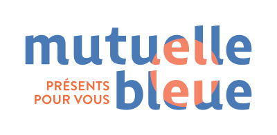
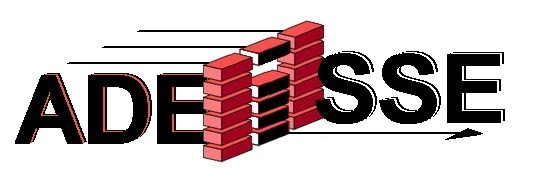

Rapport de Stage de 1ère Année :
A travers cette présentation, je vais vous présentez ce que dit dans mon rapport de stage mais je vous laisserais allez le consulter pour plus d’informations. Durant mon stage de 5 semaines, qui c’est effectuer du lundi 5 juin 2023 au vendredi 7 Juillet 2023 au sein du service informatique de
l’entreprise Mutuelle Bleue à Melun, j’ai pu approfondir mes connaissances dans les différents langages de programmation (html,css, php) et pu découvrir un peu de javascript.
Au cours de mon stage ma mission première était d’effectuer un tableau qui permettait de lire et de trier un fichier type Excel qui comportait
différentes informations sur les missions que devait effectuer les services. Chaque affaire avait donc différents attributs (idAffaire,IdClient,
nomClient,date, etc..).Également à travers mon stage j’ai pu effectuer des exercices d’entrainement, en créant des tableaux et formulaire en php et autres. Ce qui m’a permis de m’exercer durant cette période. Dans mon rapport de stage je présente les différents tableaux et formulaire ainsi
que le code utiliser en annexe. Cliquez pour accéder au Rapport de Stage : Ouvrir le Rapport de Stage 1er année

Rapport de Stage de 2ème Année :
A travers cette présentation, je vais vous présentez ce que dit dans mon rapport de stage mais je vous laisserais allez le consulter pour plus d’informations. Durant mon stage de 5 semaines, qui c’est effectuer du lundi 8 janvier 2024 au vendredi 9 Février 2024 au sein de l’entreprise Adeisse à
Fontaibleau Avon,j’ai pu approfondir mes connaissances dans les différents langages de programmation (html,css, php etjavascript).
Au cours de mon stage ma mission première était d’effectuer un tableau qui permettait de charger un fichier text qui comportait différentes
informations sur un produit. Chaque ligne avait donc une information (Référence Produit,Date,Quantite,etc..). Également à travers mon stage
j’ai pu effectuer quelques formations sur OpenClasseroom, qui m'ont permis de m'exercer mais aussi de revoir les notions vue en cours.
Ce qui m’a permis de m’exercer durant cette période. Dans mon rapport de stage je présente les différents tableaux ainsi que le code utiliser en annexe. Cliquez pour accéder au Rapport de Stage : Ouvrir le Rapport de Stage 2ème année

Veille Technologique :
A travers cette présentation, je vais vous présentez ce que j’ai pu faire à travers ma veille technologique. J’ai fait le choix de m’intéresser sur le sujet de la voiture et des nouvelles technologies. J’ai pu apprendre est découvrir grâce à mes recherches mais également aux différents abonnement grâce au site feedly de suivre différents comptes qui sont liés à l’automobile. Sur le compte “L’automobile Magazine” et les autres j’ai pu être au courant des dernières modèles de voitures mais aussi les dernières fonctionnalités ajoutés ou modifiés.
Ce que j’ai pu découvrir à travers cette veille technologique sur les voitures, sont les différents aspects des équipements sur les voitures.
Comme les capteurs, les caméras, les interfaces vocales mais également le stationnement automatique et autres équipements divers mais dans l’ensemble ces attributs qui ont été rajouté sur nos voitures est très intéressantes. Car dans l’ensemble de ces dernières années les chercheurs ont développé de plus en plus de fonctionnalité sur les voitures.
Procédures Techniques :
Voici ci dessous un lien sur les procédures que j'ai réalisé durant les 2 années de formation de BTS SIO Ce fichier présente les différentes exercices que j'ai pu effectuer durant ma formation.
Cliquez pour accéder aux Procédures Techniques : Ouvrir les Procédures Techniques